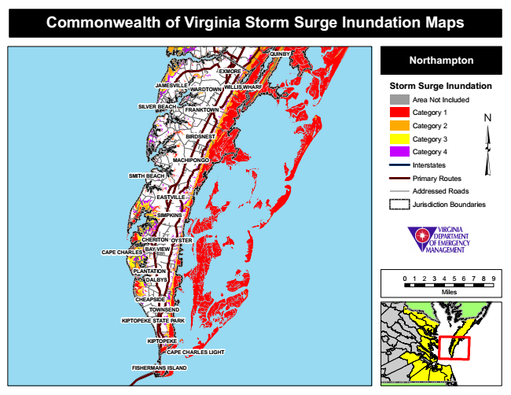

Commonwealth of Virginia Storm Surge Inundation Maps
QUINBY
Northampton
EXMORE
JAMESVILLE
WILLIS WHARF
Storm Surge Inundation
Area Not Included SILVER BEACH
Category 1
Category 2
Category 3
Category 4
Interstates
SMITH BEACH
Primary Routes
Addressed Roads
Jurisdiction Boundaries
OYSTER
CAPE CHARLES
DALBYS
0 1 2 3 4 5 6 7 8 9
Miles
FISHERMANS ISLAND
WARDTOWN
TOWNSEND
FRANKTOWN
EASTVILLE
CHEAPSIDE
BIRDSNEST
PLANTATION
MACHIPONGO
SIMPKINS
CHERITON
BAY VIEW
KIPTOPEKE STATE PARK
KIPTOPEKE
CAPE CHARLES LIGHT